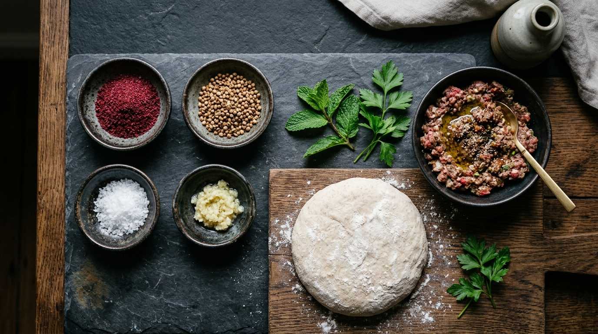

Born from the Hearth, Defined by Restraint.
Hawawshi is not fast food. When approached with reverent technique, prime butchery cuts, and live fire, it is one of the world's great culinary masterpieces.
“We stripped away the noise, the shortcuts, and the electric ovens. What remains is elemental: ancient grains, whole roasted spices, prime grass-fed cuts, and glowing hardwood embers.”

The Alchemy of Dough & Meat
The soul of genuine Egyptian Hawawshi lives in the harmony between unbleached artisan baladi dough and coarsely butchered meat.
Unlike conventional preparation, we never pre-bake or steam our bread. Raw, highly hydrated, 72-hour fermented dough is stuffed with cold, spiced, grass-fed beef and lamb. As it meets the intense radiation of our hardwood charcoal hearth, the interior meat braises gently in its own natural juices while the exterior crust blisters into a fragrant, golden shell.
We brush the dough exclusively with grass-fed bone marrow tallow and small-batch cultured clarified ghee, imparting a deep, savory aroma that cannot be replicated.
Our Heirloom Spice Archive
Every seed, blossom, and pod is directly sourced from micro-growers and toasted in copper woks daily before grinding.
Wild Desert Sumac
Foraged in the rocky valleys of St. Catherine, offering high tartness, bright crimson hue, and natural citrus acidity.
Whole Coriander Seeds
Lightly cracked to order, unleashing floral, woody, and sweet citrus essential oils into our prime meat blends.
Dark Hibiscus Calyces
Deep purple, sun-dried hibiscus blossoms selected for our signature slow cold-brews and smoked elixirs.
Silk Aleppo Pepper
Semi-dried crushed red chilies with mild fruitiness, moderate heat, and a delicate salty oil finish.

The Mastery of the Charcoal Hearth
Fire is living, breathing, and unpredictable. It demands patience and intuition.
At Maïz, our kitchen revolves around a custom-built open hearth lined with volcanic firebrick. We burn a proprietary blend of organic Egyptian citrus wood and slow-burning hard oak.
Citrus wood provides an aromatic, sweet floral smoke that kisses the baladi bread, while dense oak sustains the relentless 450°C glowing core required to create our signature crunch.
The Anatomy of Our Grilling Process
Three precision elements behind the world's crispiest, juiciest Hawawshi.
Zoned Heat Grids
High-heat searing zone at 450°C to blister the dough; medium-indirect zone at 220°C to slowly render the marbled fat and braise the meat.
Cast Iron Contact Presses
Custom heavyweight ridged iron presses that distribute uniform downward contact, preventing puffing and ensuring a singing, uniform golden crust.
Herbal Smoke Infusion
Sprigs of fresh Sinai wild rosemary and dried coriander pods tossed onto glowing coals in the final 30 seconds for an intoxicating herbal aroma.